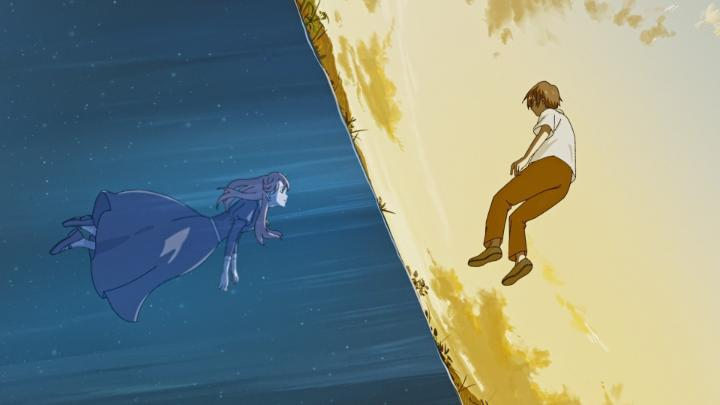

The 2021 film "Summer Ghost" could barely be called a feature film. At only 40 minutes, by most definitions, the criteria would label it as a short film, albiet a long one. And yet, the independent production got a small but wide release; GKIDS released a home-video Bluray in America. From Japan, these types of films aren't entirely out of the ordinary, and in the past, distributors would take a chance on them from time to time. Makoto Shinkai's "Voices of a Distant Star" (2002) and Soubi Yamamoto's "This Boy Can Fight Aliens!" (2011) come to mind. But the director of "Summer Ghost," credited by the stage name Loundraw, released this movie in 2021. The director looks young enough to be of the generation that never had DVD's or VHS tapes, the kind that is used to the convenience of digital streaming and online platforms. Even with a small production team behind him (some of which also used their Internet handles instead of their birth names in the credits), you'd think this film would have been dropped on YouTube (or worse, on TikTok) and they'd be done with it. For this to be treated with the respect of a work of art, with a commercial release, is a rarity for its time, and certain to be more rare as the years go on. That's a shame; while they're typically weaker on all levels compared to an expensive studio film, they're undoubtably original.The story in "Summer Ghost" is fairly simple, but effective. In it, three teenagers meet for the first time, with an interest in a local urban legend of a Summer Ghost. They say she's a young woman in dark clothes, and appears only during the summer after fireworks are lit. On an empty airport landing track, the three light sparklers for a while, until, to their surprise, the ghost shows up. The ghost doesn't mind answering questions, and the story slowly revolves around how she died and what became of her remains. The ghost mentions that only "those close to death" (or those who think about dying) are able to see ghosts, and this allows for some character development in the backgrounds of the three kids. Yes, there are themes of death and suicide in the film, so minor warnings should be mentioned to those sensitive to the subject. It's somewhat harsh, but brief and doesn't linger much. Not surprising for films like this, a lot of focus is placed on the feelings and emotions of the characters, rather than the story or plot. There's a yearning and melancholy, of teenagers lost or distant, wondering what they were meant to do or whether their current situation is right, or whether life is worth the pain. The Ghost acts as a guide of sorts, and ultimately the film is meant to be life-affirming, but I kept getting the sense that I had seen all of this before - there wasn't much new or unique the movie had to say. Of course, most anime features teenagers as the leads, and all teenagers go through this phase (and that phase never fully goes away, for some), so this subject is probably a tough sell, no matter how earnest the intentions.  However, what little plot IS present is clever, and I liked that. Parts could certainly be expanded for a longer movie, but the plot is lean and keeps the minimum that it needs to tell. The director does a good job in portraying the story, sometimes experimenting with editing out of chronological order. There's also a focus on clever animation shots at times, although there isn't much opportunity for those in the story. The opening shot, a close-up of sparklers in the darkness, is a striking image. Unlike some other cases (Shinkai's "Distant Star" was famously animated almost entirely on his persnal Mac computer), Loundraw did have a small studio helping him animate. "Summer Ghost" does feel like it reaches the quality of a television anime, if only barely. Animation is better than an animatic, but in-between frames aren't particularly expressive. The colour pallette is muted throughout, as if the film wasn't fully coloured in, a deliberate but distracting creative choice. The sense is that it wasn't quite finished, but has the bones needed for a finished production, and perhaps just needed an extra pass or two to really complete it. GKIDS did provide an English dub, which was surprising, but perhaps the film was short enough that it wasn't a big issue to include. On the American Bluray, there's a long documentary feature (longer than the film itself) that gives a good sense of what the production was like, and it opens with a short table discussion about what they were disappointed by. Artists can be hard on themselves sometimes, but that's a sign they take their work seriously and seek to improve. That's reassuring, especially given how young everyone on the team appears (nearly all of them look between 20 and 30 years of age). "Summer Ghost" is good, but is more interesting as a symbol of a new generation of animators that may or may not become superstars in their field in a decade or two. Flat Studio in particular seems interesting - their catalog appears to be entirely short films and music videos, most only a minute or two long each. It's a shame this Bluray didn't have their complete works as a bonus feature, but perhaps their next production would include some of them. I'm curious what they would make next, and hopefully, they continue to find avenues for a release on home video.
- "Ani" More reviews can be found at : https://2danicritic.github.io/ Previous review: review_Summer_Days_with_Coo Next review: review_Summer_Wars